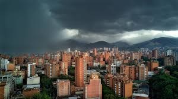
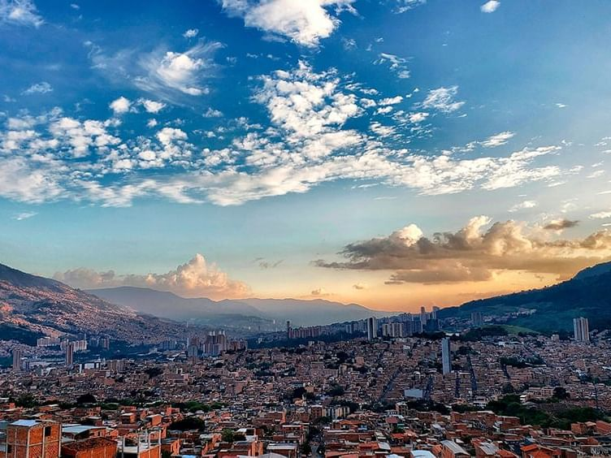
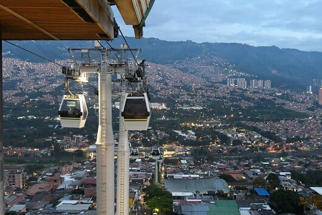
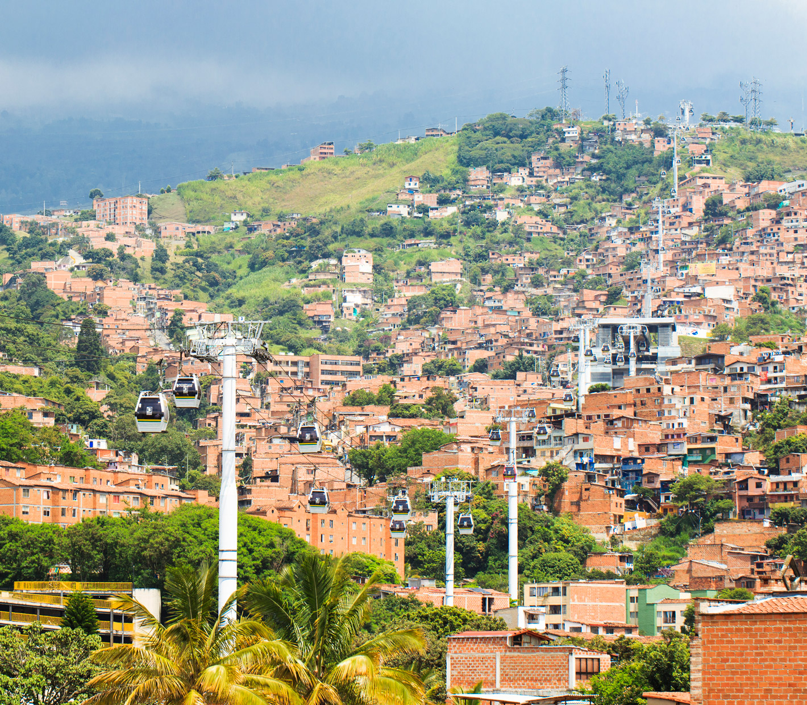

The Perfect Climate
Known as the "City of Eternal Spring," Medellín offers an ideal year-round temperature averaging 22°C. It is perfect for exploring without worrying about extreme heat or winter cold.

Experience the warmth, innovation, and eternal spring of Colombia's most vibrant city.

Known as the "City of Eternal Spring," Medellín offers an ideal year-round temperature averaging 22°C. It is perfect for exploring without worrying about extreme heat or winter cold.

Once known for a turbulent past, Medellín is now a global model of urban innovation, resilience, and smart public transportation, including the famous Metrocable network.

The local people, known as "Paisas," are world-famous for their incredible hospitality, friendliness, and welcoming spirit that makes every traveler feel right at home.